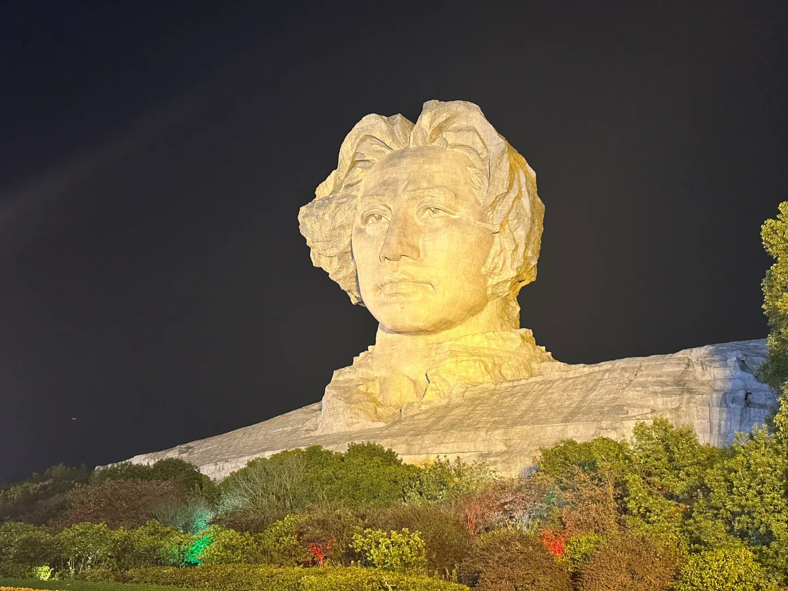

橘子洲

最多提前两天预约 景区开放时间七点到二十二点 小火车运营时间七点半到二十一点半 景区免费，小火车40一个人。 地铁二号线，橘子洲头站 从民宿六号线转二号线，三十分钟 也可以选择从岳麓山东门下后坐观光游船到橘子洲。 主要是来瞻仰毛主席雕像，其余部分就是公园性质，没什么看头。 独立在湘江上，附近没有别的景点或饭店。 必须坐车，坐车也要走很久，不坐车直接走死。 天气好推荐夕阳去。如果阴天的话，白天拍照效果会很差。天气不好推荐晚上去，晚上会打光。